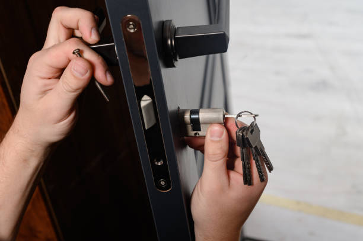
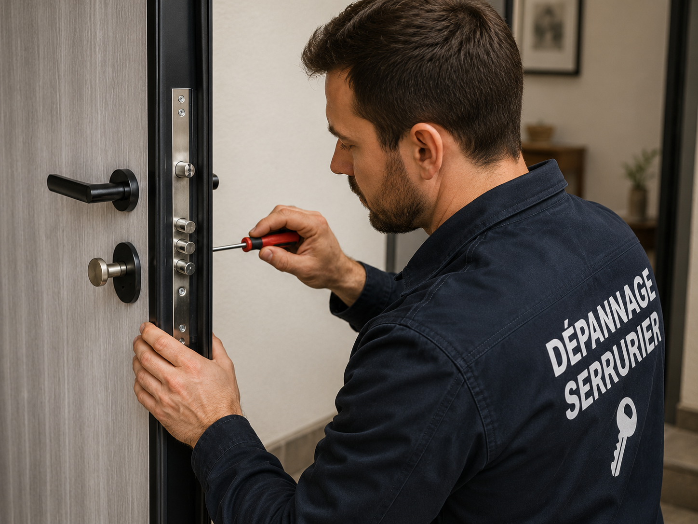
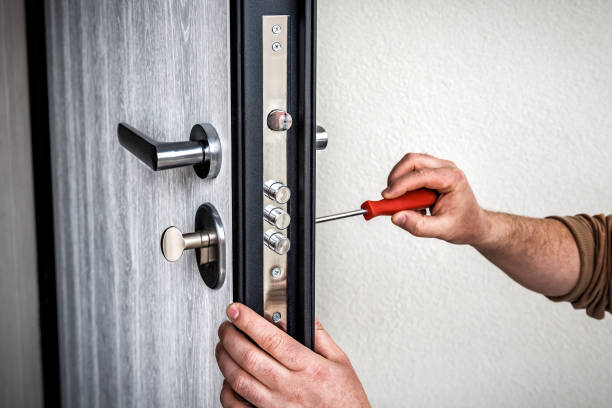
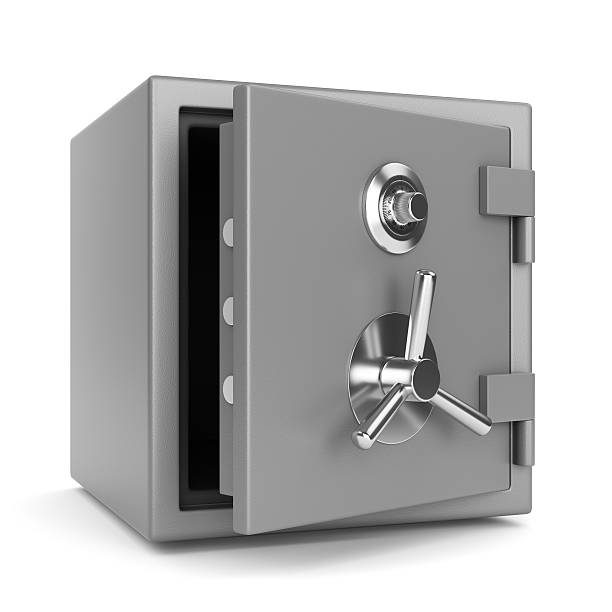
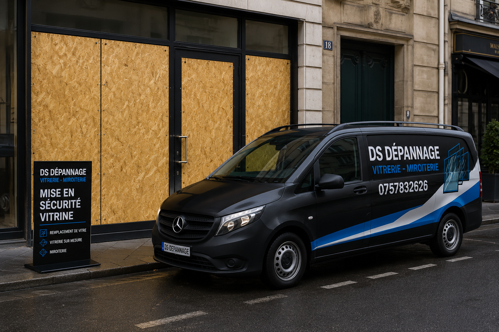

Boutique serrurerie et vitrerie
Produits de serrurerie à Paris : cylindres, serrures et sécurité
DS Dépannage propose une sélection de produits utiles pour sécuriser une porte, remplacer un cylindre, renforcer une fermeture ou préparer un remplacement de vitrage. Les prix sont affichés pour la fourniture ; la pose est confirmée sur devis selon la porte, l'accès et le modèle.

Catalogue produits par marques
Les cylindres et serrures sont rangés par famille pour faciliter la recherche : Héraclès Y7, Héraclès Y8, serrures multipoints, protections de cylindre et vitrages de sécurité.
Héraclès
Cylindres européens Y7, Y8 et Y8C
Gamme de cylindres européens pour remplacement, mise en sécurité, perte de clés ou adaptation sur serrure existante. Les dimensions sont vérifiées avant commande.

Demi-cylindre
Demi-cylindre Héraclès
Pour portail, local technique ou commande simple face.
sur devisVoir
Serrures et protections
Serrures 3 points, carénées et sécurité de cylindre
Produits utiles pour renforcer une porte, remplacer un mécanisme fatigué ou compléter une sécurisation après perte de clés.
Cylindre haute sécurité A2P
Pour remplacement après perte de clés, emménagement ou cylindre fatigué.
89,00 € Voir le produit
SerrureSerrure 3 points en applique
Solution pour renforcer une porte d'entrée avec verrouillage multipoints.
249,00 € Voir le produit
Porte blindéeSerrure carénée 5 points
Pour porte renforcée, remplacement après usure ou sécurisation.
489,00 € Voir le produit
Protection
Rosace blindée anti-arrachement
Protection du cylindre contre l'arrachement et les tentatives de forçage.
59,00 € Voir le produit
Coffre-fortCoffre-fort compact domicile
Protection de documents, clés, bijoux et petits objets sensibles.
179,00 € Voir le produit
VitrerieVitrage feuilleté sur mesure
Vitrage de sécurité pour porte vitrée, fenêtre, local ou commerce.
129,00 € Voir le produitComment commander un produit DS Dépannage ?
Vérifier la compatibilité avant achat
Une serrure, un cylindre ou une rosace ne se choisit pas seulement avec une photo. L'épaisseur de porte, le sens d'ouverture, l'ancien entraxe, la longueur du cylindre et le type de fermeture doivent être vérifiés pour éviter une pièce inutilisable.
Avant commande, vous pouvez envoyer une photo ou appeler le 07 57 83 26 26. Le produit est confirmé selon votre besoin : fourniture seule, retrait, livraison locale ou pose par un technicien.
Prix produit et pose séparés
Les prix affichés correspondent à la fourniture. La pose dépend de la porte, de l'état de l'ancien mécanisme, de l'accès et du temps nécessaire. Un devis est annoncé avant toute installation.
Cette séparation est volontaire : elle évite de mélanger un prix produit simple avec une intervention qui peut varier selon la situation réelle.
Commande produit ou devis de pose
Appelez pour confirmer la compatibilité, le stock et le délai. Pour une installation, le prix est annoncé avant intervention.